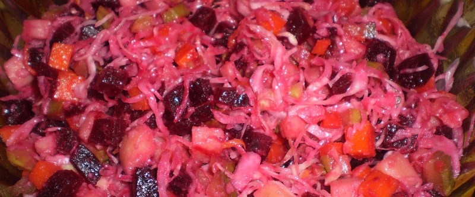

Винегрет

- морковь — 1 крупная
- картофель — 3 шт
- свёкла — 1 средняя
- солёные огурцы — 2 шт
- квашеная капуста — 300 г
1 крупную морковь, 3 картофелины и 1 среднюю свеклу помыть, отварить в кожуре до полной готовности, остудить. Остывшие овощи почистить и нарезать кубиками. 2 соленых огурца тоже мелко порезать и добавить 300 гр. квашеной капусты.
Овощи хорошо перемешать в миске и посолить. В самом конце заправить растительным маслом.
 Назад к списку рецептов
Назад к списку рецептов